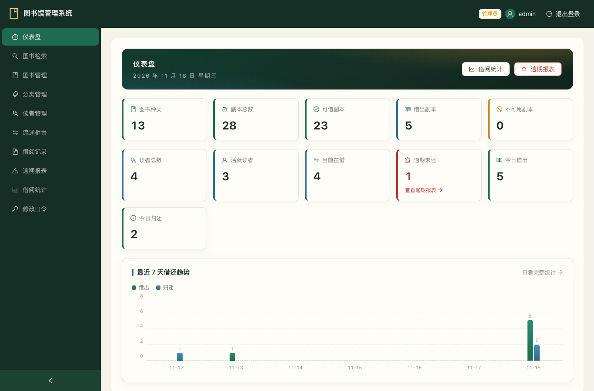
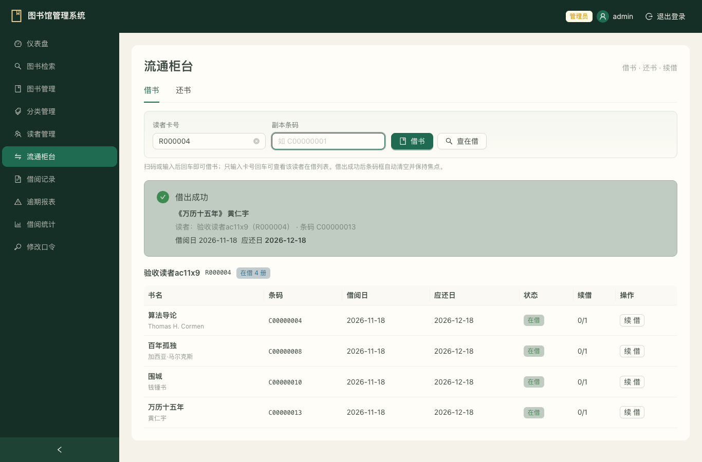
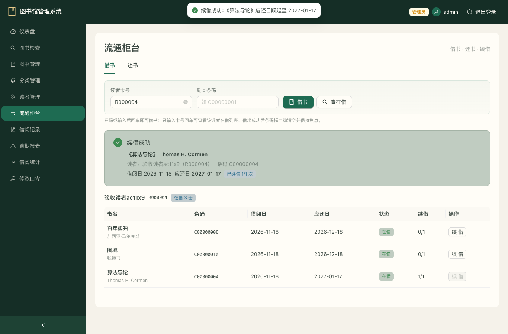
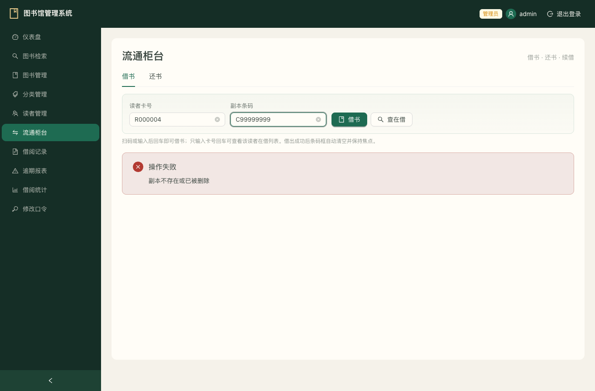
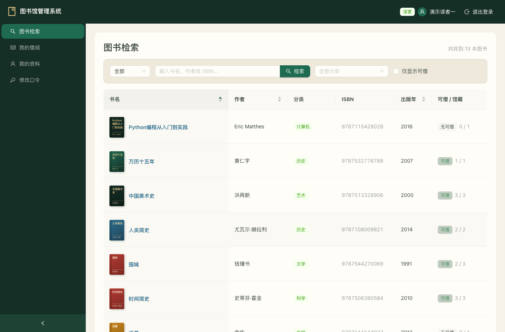
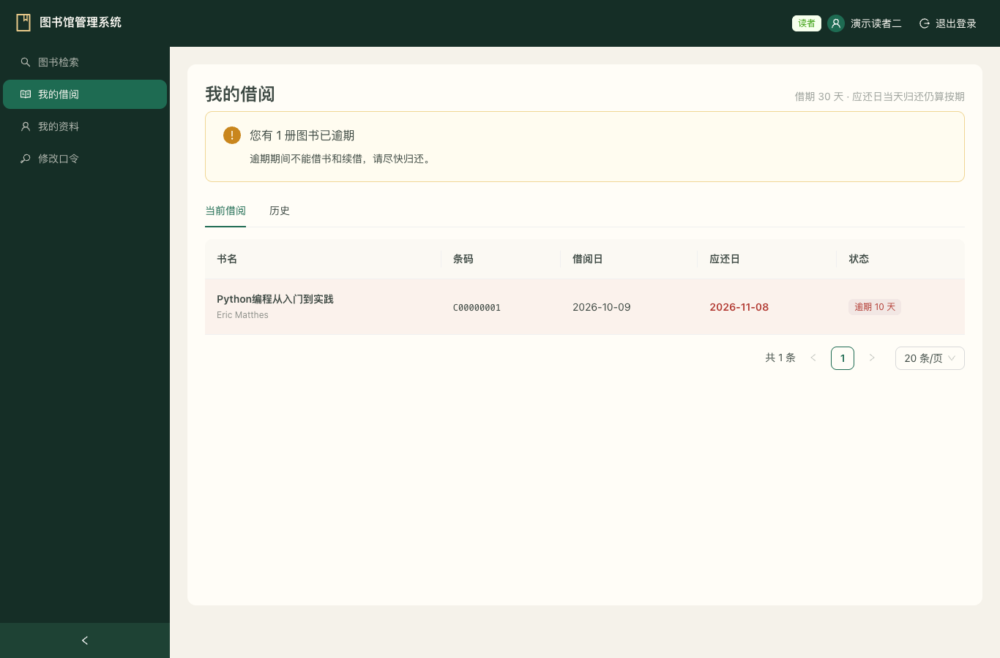
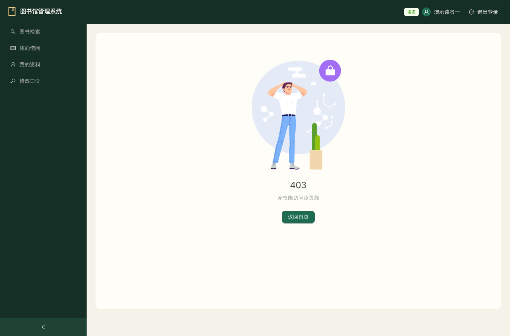
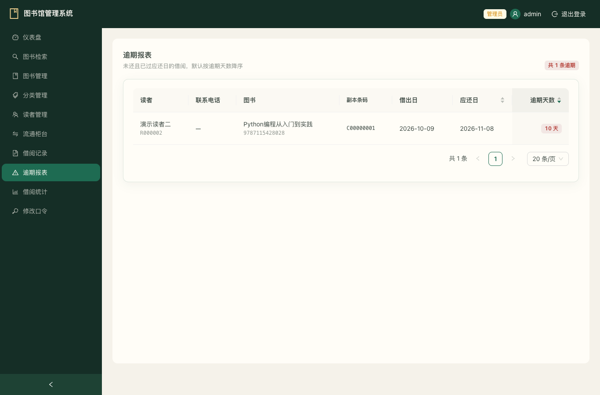

图书馆管理系统首版 · 总结报告
taskId lib-mgmt-20261117 ｜ 报告日期 2026-11-18 ｜ 绑定候选 53beed1d7decfa898413faa45b9b1793b2d529c82f4127409b5524727c2ef1c7
交付内容：一个在本机运行的图书馆管理系统。管理员维护分类、图书、副本和读者，在流通柜台办理借书、还书、续借，并查看统计与逾期报表；读者检索图书、查看本人借阅、修改口令。
数字来源：验收报告（AC、DoD、缺陷数、后端 515、E2E 8/8）、logs/t13-test-all-final.log（前端 323）、stage-results.md（各环节结论）。评审与开发同为 Qwen4-Max（独立会话、不共享上下文），验收换用 GLM-5.3。验收第 1 轮因主会话在快照生成后误改了快照内文件而中止（不是产品缺陷），恢复原文件后第 2 轮通过。
候选 ID 是什么：279 个文件逐一计算 sha256 后形成清单，候选 ID 是这份清单本身的 sha256。评审和验收都在开始与结束时校验它，保证两者检查的是同一份代码。
已知限制（均经独立评审同意放行）
- I-07 读者被停用后，已登录的会话仍能访问部分接口（包括修改本人口令），且会话持续活动时不会因 30 分钟空闲超时而失效；该读者无法重新登录，管理员也无法再为其借书或续借。
- I-04 表单错误处理工具在 3 个功能模块中各有一份重复代码。
- I-06 前端主包约 898 KB，构建时有体积告警（不是错误）。
- R-01 登出时若有旧请求仍在途、且在重新登录后才返回“未登录”响应，可能把新会话登出（安全方向，不泄露数据）。
如何启动与登录
在仓库根目录执行 bash scripts/dev.sh，打开 http://localhost:15195（后端端口 18095）。账号仅用于本地开发：
| 账号 | 口令 | 角色与演示状态 |
|---|---|---|
admin | Admin@12345 | 管理员 |
reader1 | Reader@123 | 读者，1 本在借 |
reader2 | Reader@123 | 读者，1 本逾期（逾期 10 天） |
reader3 | Reader@123 | 读者，已停用（演示无法登录） |
1 · 完成了什么
按角色的功能
| 角色 | 菜单与功能 |
|---|---|
| 管理员 | 仪表盘；图书检索；图书管理（新建、编辑、副本追加、改状态、删除）；分类管理；读者管理（新建读者同时创建账号、停用/启用、删除、重置口令）；流通柜台（借书、还书、续借，回车提交）；借阅记录（过滤、分页）；逾期报表；借阅统计（日/月粒度、热门图书）；修改口令 |
| 读者 | 图书检索与详情（只显示可借数量，不显示条码）；我的借阅（当前/历史，逾期标红，无续借按钮）；我的资料；修改口令 |
业务规则（用户决定 D1–D7）
- D1：每位读者同时在借上限 5 本；借期 30 天；可续借 1 次，从当前应还日顺延 30 天。
- D2：只有管理员能续借。
- D3：Spring Boot 4.1.x。
- D4：纳入“修改本人口令”；同一读者不能同时借同一书目的两个副本；ISBN 严格校验位检查。
- D5：后端 18095、前端 15195（E2E 用 18096 / 15196）；时区 Asia/Shanghai。
- D6：允许下载方案内依赖；新增依赖需用户批准。
- D7：需求中的“rreact”即 React；技术栈为 Spring Boot + React + SQLite。
- 非目标：预约、罚款、部署上线。
系统结构
数据模型
app_user 1—1 reader（读者档案）；category 0..1—N book（图书可不归属分类）；book 1—N book_copy（副本，带条码与状态）；reader 1—N loan；book_copy 1—N loan（同一副本同时最多 1 条在借，由部分唯一索引保证）。
技术栈
| 后端 | Spring Boot 4.1.2、JDK 21、Spring Security、Hibernate 7.4.13（社区 SQLite 方言）、Flyway 12.4.0、sqlite-jdbc 3.53.4.0、JUnit 5 |
|---|---|
| 前端 | React 19.3、React Router 7.18、antd 6.7、TanStack Query 5.108、Vite 7.3、TypeScript 5.9、Vitest 5.1、Playwright 1.65 |
演示数据
5 个分类、12 本书、24 个副本、3 个演示读者（reader3 已停用）、10 条借阅（1 条在借、1 条逾期、8 条已还）。
界面截图（独立验收时在真实浏览器中截取）








2 · 怎么完成的
环节流水线
主会话负责调度和与用户沟通，每个环节在独立会话中执行，并由主会话独立复验结果后才进入下一步。评审在独立会话中进行（与开发同为 Qwen4-Max，但不共享上下文），验收换用另一个模型 GLM-5.3。
| 环节 | 模型 | 会话 ID | 结论 |
|---|---|---|---|
| 方案设计 | Ultimate | c0a55560-acd1-52f2-ae9c-fb56ae8f0f02 | design-v0.1 与 AC/DoD v1，用户批准 |
| 开发实现 T01–T14 | Qwen4-Max | 14 个会话，见下表 | 全部完成，主会话逐个复验 |
| 独立评审 | Qwen4-Max | 63bcd8ec-d7fd-53d9-a712-cd4eefe52915 | PASS（0 阻断，7 非阻断） |
| 独立验收 | GLM-5.3 | 968bd6be-6ab0-57e7-abc9-fc43fbea0888 | 第 1 轮 BLOCKED，第 2 轮 PASS |
| 交付运维 | — | — | 未启用（不部署） |
任务拆解与依赖
用户选择共享工作区，后端任务改为串行以避免同时编译同一工程（调度修订 plan-v1.1）；前端页面任务在不同目录写入，可以并行。T12 依赖全部实现任务，图中只画出各组最后完成的任务。
| 任务 | 会话 ID | 任务 | 会话 ID |
|---|---|---|---|
| T01 后端基础与认证 | b20275ae-4db2-50e3-ac69-692498036ccc | T08 检索与馆藏页面 | dae4c6f1-27a2-5913-a17f-ac7f1226b6f8 |
| T02 前端基础工程 | 00f68268-5dfc-5183-a2d9-b791a9668c0a | T09 读者管理页面 | 6ba34ce0-1437-50b0-ad70-713a402e75ae |
| T03 根目录脚本 | a7feface-5aab-5a9c-a524-7f27aebf8a4b | T10 流通柜台页面 | 45b0479c-1a68-50dd-a244-e94e85c23374 |
| T04 分类/图书/副本接口 | 90be31a4-2d7c-5a70-af27-230314e4e343 | T11 仪表盘与统计页面 | 70c75d61-0686-5a5c-a022-cfbcca9e6563 |
| T05 读者接口 | 5ac3b058-f05b-588b-a128-be8f7eecd788 | T14 修改本人口令 | 0ac87f6b-ed28-548b-a7ba-2b95c16584dc |
| T06 借阅/归还/续借接口 | c066789b-3ef4-5e26-a7da-cccfb8479fd1 | T12 端到端冒烟 | 90519310-b57c-52fb-a92f-790b49c216f8 |
| T07 统计与逾期报表接口 | 9154df40-465e-5608-a337-22b1ac5659b3 | T13 最终集成 | a00a1003-9a42-5419-a985-8818fd28a84b |
关键决策与变更
- 用户追认 T02 额外引入的 4 个开发依赖（
@types/react、@types/react-dom、@types/node、@testing-library/dom）。 - 契约修订 R1：错误码表新增
METHOD_NOT_ALLOWED（HTTP 405），用户批准，前后端同步。 - 集成待办 I-01..I-09 全部交给 T13：I-01/02/03/05/08/09 修复；I-04/06/07 记为已知限制。
问题与返工（按真实原因记录）
| 问题 | 现象 | 根因 | 处置 | 影响 |
|---|---|---|---|---|
| T01 首轮失败 | 第一轮未完成 | 未查明 | 第二轮完成，主会话复验后端构建与测试通过 | 无 |
| I-02 | 用错请求方法时后端返回 500 | 异常处理器未区分“方法不支持” | 新增 405 错误码（R1）并补回归测试 | 契约小修订 |
| I-08 | 前端全量测试 19 项失败 | T02 写的路由测试仍断言“建设中”占位页 | T13 改为断言真实页面，全量测试 0 失败 | 无 |
| I-09 / E-01 | 管理员登出后换读者登录，被带回管理页并显示 403 | 登出过程中三处组件之间存在竞态 | T13 增加“主动登出”标志，先写失败测试再修复，浏览器确认 | 残余边界见 R-01 |
| I-05 | 借还后检索结果的可借数量不刷新 | 流通页面没有让馆藏数据缓存失效 | T13 先写失败测试再修复，浏览器确认 | 无 |
| 验收第 1 轮 BLOCKED | 验收发现 1 个文件哈希与快照不符 | 主会话失误：快照生成后修改了快照内的 approval-record.md | 恢复原字节（哈希复核一致），登记移到快照外的 stage-results.md，第 2 轮通过 | 评审结论不受影响（评审校验的是原字节） |
| 遗留文件 acc-admin.jar | 工作区根目录多出 1 个 cookie 文件 | 验收脚本写到了授权范围之外 | 主会话移入验收证据目录（未删除） | 仅含已停止测试实例的 XSRF-TOKEN 名称与失效值，无口令或会话 |
3 · 如何证明完成得好
四层验证，绑定同一候选
验收标准 AC：43/43 通过
| 分组 | 条数 | 覆盖内容 | 开发 | 评审 | 验收 |
|---|---|---|---|---|---|
| AC-AUTH | 11 | 登录（错误凭据统一 401）、停用账号、未登录 401、授权矩阵、本人数据隔离、CSRF、登出、口令存储、跳转与 403、修改口令、初始管理员 | PASS | PASS | PASS |
| AC-CAT | 1 | 分类增删改，名称忽略大小写去重 | PASS | PASS | PASS |
| AC-BOOK | 3 | 图书创建与编辑（ISBN 严格校验）、删除前检查借阅历史、总副本数与可借数量统计 | PASS | PASS | PASS |
| AC-COPY | 2 | 副本追加与条码生成、状态修改与删除规则 | PASS | PASS | PASS |
| AC-RDR | 6 | 创建读者与账号、停用联动、删除规则、检索、重置口令、我的资料 | PASS | PASS | PASS |
| AC-LOAN | 8 | 借书与应还日、7 类拒绝规则、并发、还书、续借、逾期判定、我的借阅、借阅列表过滤 | PASS | PASS | PASS |
| AC-SRCH | 2 | 检索语义（模糊、ISBN、转义）、读者视角检索 | PASS | PASS | PASS |
| AC-STAT | 4 | 概览、借还趋势（补零）、热门图书、逾期报表 | PASS | PASS | PASS |
| AC-UI | 6 | 加载/空/错误/有数据四种状态、表单字段错误、错误码中文文案、柜台交互、续借按钮与读者菜单限制、仪表盘/统计/逾期报表页 | PASS | PASS | PASS |
开发列来自 ac-dod-matrix.md（开发阶段逐条结果与证据位置），验收列来自 acceptance-report.md（验收阶段）。
完成定义 DoD：12/12 通过
| DoD | 内容 | 核验者 | 结果 | 关键证据 |
|---|---|---|---|---|
| DOD-01 | 空克隆中前后端构建（mvn verify、npm ci + build）；Java 8 被拒绝 | 验收 | PASS | 后端 515 个测试通过；enforcer 提示“本项目要求 JDK 21 及以上” |
| DOD-02 | dev.sh 启动、自动建库、停止、端口占用提示 | 验收 | PASS | acceptance/logs/acc-dod02-*.log |
| DOD-03 | 后端测试全部通过、无禁用测试 | 评审 | PASS | 515 个，0 failure，0 error，0 skipped |
| DOD-04 | 前端 lint / 类型检查 / 测试 / 构建 | 评审 | PASS | 34 个文件 323 个用例通过 |
| DOD-05 | E2E：7 步冒烟 + 1 个登录冒烟，不碰开发库 | 验收 | PASS | 8/8 通过 |
| DOD-06 | 演示数据与初始管理员，重启不重复 | 验收 | PASS | 重启前后记录数不变 |
| DOD-07 | README 可照做 | 验收 | PASS | 验收只按 README 完成全部操作 |
| DOD-08 | 安全 | 评审 | PASS | 见下方“高风险项” |
| DOD-09 | 追溯矩阵完整 | 评审 | PASS | 43 条 AC + 12 条 DoD，无空项 |
| DOD-10 | 范围与依赖、无 REQUIRES_NEW、迁移未改 | 评审 | PASS | 只有 Flyway V1 且未修改 |
| DOD-11 | 独立评审通过 | 评审 | PASS | 0 个阻断问题 |
| DOD-12 | 独立验收通过且与评审同一快照 | 验收 | PASS | 开始/结束快照均 279/279 |
高风险项
| 风险 | 证明 |
|---|---|
| 并发借还 | 验收黑盒复测：10 个并发请求借同一副本，1 个成功，9 个返回 COPY_NOT_AVAILABLE；同一读者并发借 8 本不同书，5 个成功，3 个因超限被拒；同一借阅并发还两次，1 个成功，1 个返回 LOAN_ALREADY_RETURNED。后端 LoanConcurrencyTest 在 T13 集成阶段连续运行 3 次均通过（logs/t13-concurrency-run1..3.log）。 |
| 安全 | 口令以 BCrypt 存储，任何响应都不含口令；CSRF 防护；读者访问他人借阅返回 404；SQL 全部参数绑定；500 响应不暴露内部信息；日志不输出口令或 Token；npm audit 0 个漏洞；依赖版本在支持期内。 |
| 时区与逾期 | 业务时区 Asia/Shanghai；应还日当天不算逾期；上海零点边界有专门测试。 |
如何自己复核
| 想确认 | 命令（在仓库根目录用 bash 执行） |
|---|---|
| 代码就是被评审和验收的那一份 | grep -v '^#' docs/verification/candidate-snapshot.txt | grep -v '^$' > /tmp/snap.txt && shasum -a 256 -c /tmp/snap.txt | grep -vc ': OK$'; shasum -a 256 /tmp/snap.txt（第一个输出应为 0，第二个应等于候选 ID） |
| 全部测试 | bash scripts/test-all.sh |
| 亲自操作 | bash scripts/dev.sh，然后打开 http://localhost:15195 |
4 · 遗留风险与建议
| 编号 | 内容 | 影响 | 建议 | 优先级 |
|---|---|---|---|---|
| R-01 | 登出时若有旧请求在途、在重新登录后才返回 401，会把新会话登出 | 偶发体验问题，安全方向，无数据泄露 | 请求带“会话代际”标记，迟到的旧代际响应直接忽略 | 中 |
| I-07 | 停用读者的已登录会话在空闲超时前仍能访问部分接口（包括修改本人口令） | 无法借书、续借或重新登录；会话持续活动时不会因空闲超时而失效 | 每个请求复查账号状态，或停用时注销会话 | 中 |
| I-04 | 表单错误处理工具在 3 个模块中重复 | 维护成本 | 合并到共享层 | 低 |
| I-06 | 前端主包约 898 KB | 首屏加载稍慢（本机使用影响小） | 按需拆分 antd 等大依赖 | 低 |
| R-04 | 追溯矩阵中个别用例计数有偏差；README 写“两份”重复代码实际三份 | 描述不精确，不影响证据有效性 | 下一次改动时一并修正 | 低 |
任何代码或文档改动都会产生新的候选：需要重新生成快照，并对受影响范围重新评审和验收。
附录 · 证据索引
| 文件 | 证明什么 |
|---|---|
| candidate-snapshot.txt | 候选的 279 个文件及其 sha256 |
| ac-dod-matrix.md | 开发阶段每条 AC/DoD 的结果与证据位置 |
| stage-results.md | 各环节结论登记 |
| acceptance/acceptance-report.md | 独立验收完整报告（43 + 12 行矩阵） |
| acceptance/logs/ | 验收的构建、启动、E2E、并发日志 |
| acceptance/screenshots/ | 验收时的 16 张浏览器截图 |
| logs/ | T13 集成阶段的测试、审计、静态检查日志 |
| screenshots/ | T13 的 390px 布局与刷新修复截图 |
| ../design/solution-design.md | 方案设计（契约 design-v0.1-R1） |
| ../design/ac-dod.md | 验收标准与完成定义 v1 |
| ../design/approval-record.md | 用户决定与集成待办 |
| ../../README.md | 安装、启动、测试、账号、已知限制 |
本报告位于快照排除目录，写入它不会改变候选 ID。